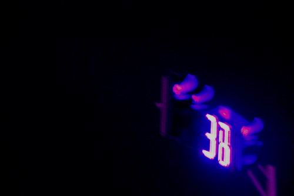

人们常常说，人与人之间，尤其相爱的人之间，应该互相了解和理解，最好做到彼此透明、心心相印。史怀哲却在《我的青少年时代》中说，这是不可能的，即使可能，任何人也无权对别人提出这样的要求。“不仅存在着肉体上的羞耻，还存在着精神上的羞耻，我们应该尊重它。心灵也有其外衣，我们不应该脱掉它。”如同对于上帝的神秘一样，对于他人灵魂的神秘，我们同样不能像看一本属于自已的书那样去阅读和认识，而只能给予爱和信任。每个人对于别人来说都是一个秘密，我们应该顺应这个事实。相爱的人们也只是“在黑暗中并肩行走”，所能做到的仅是各自努力追求心中的光明，并互相感觉到这种努力，互相鼓励，而“不需要注视别人和脸和探视别人的心灵。”
读着这些精彩无比的议论，我无言而折服，它们使我瞥见了史怀哲的“敬畏生命”伦理学的深度。凡是有着深刻而丰富的内心生活的人，必然会深知一切精神事物的神秘性并对之充满敬畏之情，史怀哲就是这样一个人。在他看来，一切生命现象都是世界某种神秘的精神本质的显现，由此他提出了敬畏一切生命的主张。在一切生命现象中，尤以人的心灵生活最接近世界的这种精神本质。因而，他认为对敬畏世界之神秘本质的人来说，“敬畏他人的精神本质”乃是不言而喻的事情。
以互相理解为人际关系的鹄的，其根源就在于不懂得人的心灵生活的神秘性。按照这一思路，人们一方面非常看重别人是否理解自已，甚至公开索取理解。至少在性爱中，索取理解似乎成了一种最正当的行为，而指责对方不理解自已则成了最严厉的谴责，有时候还被用做破裂前的最后通牒。另一方面，人们又非常踊跃地要求理解别人，甚至以此名义强迫别人袒露内心的一切，一旦遭到拒绝，便斥之以缺乏信任。在爱情中，在亲情中，在其他较亲密的交往中，这种因强求理解和被理解而造成的有声或无声的战争，我们见得还少吗？可是，仔细想想，我们对自已又真正理解了多少？一个人懂得自已理解自已之困难，他就不会强求别人完全理解自已，也不会奢望自已完全理解别人。
在最内在的精神生活中，我们每个人都是孤独的，爱并不能消除这种孤独，但正因为由已及人地领悟到了别人的孤独，我们的内心才会对别人充满最诚挚的爱。我们在黑暗中并肩而行，走在各自朝圣路上，无法知道是否走向同一样圣地，因为我们无法向别人甚至向自已说清心中的圣地究竟是怎样的。然而，同样的朝圣热情使我们相信，也许存在着同一个圣地。作为有灵魂的存在物，人的伟大和悲壮尽在于此了。
15 Responses to “在黑暗中并肩行走”
2005-10-09
第六十号男孩
2005-10-09
黑暗里什么也没有...
2005-10-09
“在最内在的精神生活中，我们每个人都是孤独的，爱并不能消除这种孤独，但正因为由已及人地领悟到了别人的孤独，我们的内心才会对别人充满最诚挚的爱。”很有道理的一段话。
2005-10-10
是周国平的《各自的超圣路》，最近在看
2005-10-10
朝圣，笔误
2005-10-10
You are philosophically, and absolutely too, correct! Thinking of how difficult, if not impossible, to understand oneself, we really have no reason whatsoever to make an equally futile attempt to seek an understanding of other people. By the way, I am breathtakingly attracted by your beauty and above all, your wisdom.
2005-10-10
人的心灵生活真是太神秘了~~~~~~
2005-10-11
“在黑暗中并肩走”，这句话真好
就象内心的提纯，少了各种欲望，只剩下一个仿佛相同的圣地
2005-10-11
在黑暗中并肩走
想起了小时侯和父亲
无言的走在小路上
我感到温暖 幸福 安全
想起了和女友
在分别前一晚
手挽手的在校园里走
漫无目的而心怀感伤
如今我在远方
离他们那么远
但我爱他们胜过爱我自己的生命
2005-10-12
听听NANA的lonely吧，非常好听也配合你的心情
2005-10-12
christina，我是CNBlog.org的Zheng，中国茶这个blog在del.icio.us/tags/cnbloggercon中被推选为特色blogger，所以我们拟邀请中国茶的一名成员参加中文网志年会，但没能找到您们的联系信箱，可否方便将email发送到.........，以便送达邀请信。多谢。
2005-10-12
Always want to give more, but do not expect the same. That is called human nature.
2005-10-13
也许正是因为懂得理解自己的难处，有时候才会希望别人来理解，哪怕只是一点点，都会十分感动。
2005-10-19
你的文字理智里又散发着感性，在这里总能找到共鸣
冒昧的问，能引用吗？
2005-10-24
can we make friends?
msn:babymoer@sohu.com
Leave A Reply
存档只读，评论已关闭。